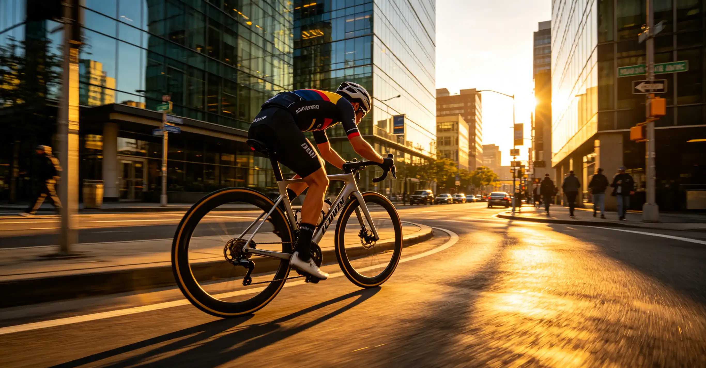

You have been riding with a heart rate monitor for years, and your training has plateaued. You have heard that power meters are the gold standard for training, but the numbers—watts per kilogram, normalized power, Intensity Factor, Training Stress Score—feel like a foreign language. Worse, a quality power meter costs between $299 and $1,200, and you do not want to waste money on the wrong one. This article demystifies power meters: how they measure your effort, what the training zones actually mean, and how to use wattage data to systematically get faster.
How I Discovered My FTP Was 30 Watts Lower Than I Thought
In the spring of 2024, I thought I was in the best shape of my life. I had been doing group rides with the local A-group, holding my own on the Wednesday night world championships through Rock Creek Park in Washington, DC. I estimated my FTP at 285 watts based on feel. Then a friend loaned me a pair of Garmin Rally RS200 pedals for a 20-minute FTP test on a steady 3% grade on Beach Drive. The result after the 0.95 correction factor: 248 watts. I was off by 37 watts—nearly 15%. I had been training my Zone 3 intervals at what was actually my Zone 4, accumulating fatigue without the targeted adaptations I needed. Two months of properly calibrated training later, my actual FTP rose to 268 watts. The power meter did not make me stronger—it made my training accurate.
That experience taught me something fundamental: perceived exertion is notoriously unreliable. A 2020 study in the Journal of Sports Sciences found that even experienced cyclists misjudge their effort by 15–35 watts on average during steady-state efforts. A power meter removes the guesswork entirely.
How Power Meters Actually Work
A cycling power meter measures torque (force applied) and angular velocity (cadence) and multiplies them to produce watts. The formula is simple: Power (W) = Torque (Nm) × Angular Velocity (rad/s). Modern power meters use strain gauges—tiny sensors that measure microscopic deformation of a metal component when force is applied. The three main types differ in where they measure force:
| Type | Measurement Location | Accuracy | Price Range | Best For |
|---|---|---|---|---|
| Pedal-based | Spindle of each pedal | ±1.0% | $499–$ | Easy swapping between bikes |
| Crank-arm-based | Left crank arm | ±1.5% | $299–$ | Budget-conscious riders |
| Spider-based | Crank spider | ±1.0% | $499–$ | Most accurate total power |
Pedal-based meters like the Garmin Rally RS200 ($1,099) and Favero Assioma DUO ($749) measure each leg independently, giving you left/right balance data. Crank-arm meters like the 4iiii Precision 3 ($299) measure only the left leg and double the value—accurate enough for most riders but potentially misleading if you have a significant leg imbalance. Spider-based meters like the Quarq DZero ($629) and Power2Max NGeco ($649) measure total force at the crankset and are the gold standard for accuracy. All modern meters are temperature-compensated and auto-zero when you coast, eliminating the drift issues that plagued early units.
The Seven Power Training Zones
Dr. Andrew Coggan's power-based training zones are the industry standard. Each zone targets a specific physiological adaptation, and the key to effective training is spending time in the right zone for your goal. Here are the zones expressed as a percentage of FTP:
| Zone | Name | % FTP | Example (250W FTP) | Primary Adaptation |
|---|---|---|---|---|
| 1 | Active Recovery | <55% | <138W | Increased blood flow, waste removal |
| 2 | Endurance | 56–75% | 140–188W | Mitochondrial density, fat oxidation |
| 3 | Tempo | 76–90% | 190–225W | Muscular endurance, glycogen sparing |
| 4 | Threshold | 91–105% | 228–263W | Lactate clearance, FTP increase |
| 5 | VO2 Max | 106–120% | 265–300W | Maximal oxygen uptake |
| 6 | Anaerobic Capacity | 121–150% | 303–375W | Glycolytic power, sprint endurance |
| 7 | Neuromuscular Power | >150% | >375W | Peak sprint power, neural drive |
A polarized training model—spending roughly 80% of training time in Zone 2 and 20% in Zones 4–2—has been shown in multiple studies to produce superior endurance gains compared to threshold-heavy training. A 2014 meta-analysis by Stephen Seiler in the International Journal of Sports Physiology and Performance found that elite endurance athletes across cycling, running, and cross-country skiing consistently follow this 80/20 distribution.
Key Metrics Beyond FTP: TSS, IF, and NP
Knowing your FTP is just the beginning. Three additional metrics turn raw wattage into actionable training data. Training Stress Score (TSS) quantifies the total training load of a ride. The formula is TSS = (seconds × NP × IF) / (FTP × 3600) × 100. A one-hour ride at FTP equals 100 TSS. A 3-hour Zone 2 ride at 70% of FTP yields roughly 150 TSS. Weekly TSS totals between 400 and 600 are typical for serious amateurs; professional riders often exceed 800. Intensity Factor (IF) is simply NP divided by FTP. An IF of 0.70 means you rode at 70% of your FTP on average. An IF above 0.85 for a ride longer than two hours indicates a very hard effort. Normalized Power (NP) adjusts average power to account for the physiological cost of variable efforts. A ride with surges and coasting will have a higher NP than its average power. TrainingPeaks and intervals.icu both calculate these metrics automatically from your power data.
Choosing the Right Power Meter for Your Budget
At $299, the 4iiii Precision 3 left-crank power meter is the best entry point. It weighs only 9 grams added to your existing Shimano crank arm, uses a CR2032 battery that lasts 800 hours, and communicates via both ANT+ and Bluetooth. The accuracy is ±1.5%, which is within 4 watts at a 250-watt effort—more than precise enough for structured training. At the mid-range, the Favero Assioma DUO ($749) offers dual-sided measurement with ±1.0% accuracy, rechargeable batteries with 50-hour life, and easy transfer between bikes. For the premium option, the SRM Origin ($1,199) is the choice of WorldTour teams, with laboratory-grade accuracy of ±0.5% and a 10-year track record of reliability. My recommendation: start with a single-sided meter. The additional data from dual-sided measurement is interesting but rarely changes training decisions. The $400–$ you save buys a lot of entry fees and tires.
Frequently Asked Questions
FTP is best expressed in watts per kilogram (W/kg). A recreational male cyclist typically has an FTP of 2.5–3.0 W/kg. A competitive amateur (Cat 3–2 racer) is around 3.5–4.0 W/kg. Cat 1–2 racers are 4.0–4.5 W/kg. Domestic professionals are 5.0–5.5 W/kg, and WorldTour pros can exceed 6.0 W/kg. For a 75 kg male, a 250W FTP equals 3.3 W/kg—solid recreational fitness.
Who This Is For (And Who It's Not)
Best for: Road cyclists who have been training consistently for at least six months and want to move from "riding" to "training." Riders who race or have specific performance goals (FTP targets, time-based climb goals, fondo times).
Not ideal for: Complete beginners who are still building base fitness. If you ride fewer than four hours per week, a heart rate monitor provides sufficient guidance. Also not for riders who find data paralyzing—if numbers stress you out rather than motivate you, stick with perceived exertion.
Every 4–6 weeks during a training block. More frequent testing adds unnecessary fatigue without meaningful data. If you use an app like TrainerRoad, its AI FTP Detection can estimate your FTP from hard rides without a dedicated test, but a formal 20-minute test remains the gold standard for accuracy.
Yes, all modern power meters broadcast via ANT+ and Bluetooth, making them compatible with Zwift, TrainerRoad, Rouvy, Wahoo SYSTM, and all major indoor cycling platforms. A power meter also allows you to use a dumb trainer with Zwift by broadcasting your power to the app.
Average power is the simple arithmetic mean of all power readings. Normalized Power (NP) uses a 30-second rolling average raised to the fourth power, then averaged, then the fourth root is taken. This mathematical transformation accounts for the fact that variable efforts (surges and coasting) are physiologically more demanding than steady efforts at the same average wattage. A criterium might show an average power of 220W but a NP of 280W due to constant surging out of corners.
Yes. Pedal-based power meters like the Garmin Rally XC200 ($1,199) and the SRM X-Power MTB pedals are designed specifically for mountain bike use. Spider-based meters like the Quarq TyreWiz-compatible models also work. Just be aware that MTB power data is inherently more variable due to terrain, so metrics like NP are even more useful than on the road.
Modern power meters include automatic temperature compensation (ATC). When you start a ride at 50°F and the temperature climbs to 85°F, the strain gauges expand slightly. ATC adjusts the calibration in real time. Most meters also auto-zero when you coast (no force on the pedals), recalibrating the zero offset. This is why you should coast for 3–5 seconds at the start of every ride to let the meter auto-zero.
Conclusion
A power meter is the single most transformative piece of training equipment a road cyclist can buy. It replaces guesswork with objective data, making every training session purposeful. Even a budget $299 single-sided meter will transform your riding if you commit to structured training. Your two action items: (1) Choose a power meter type and model from the comparison above that fits your budget and bike setup, and (2) Bookmark intervals.icu—a free analysis platform that will process your power data into TSS, fitness trends, and performance predictions without any subscription fee.
Sources: Coggan & Allen, "Training and Racing with a Power Meter" (2019); Seiler, S. "What is Best Practice for Training Intensity Distribution?" (2010), Scandinavian Journal of Medicine & Science in Sports; Seiler, S. "Polarized Training" meta-analysis (2014), International Journal of Sports Physiology and Performance; Journal of Sports Sciences (2020), perceived exertion accuracy study; Manufacturer specifications: Garmin, Favero, 4iiii, Quarq, SRM, Power2Max (2024–2026).